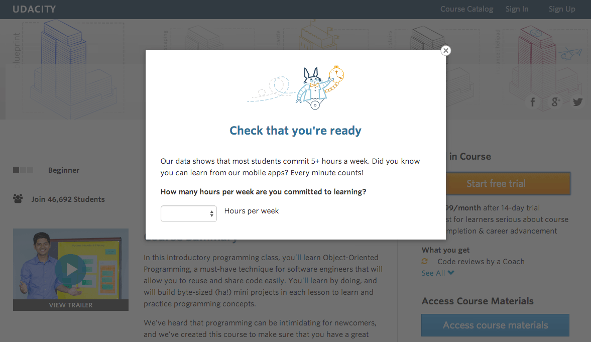
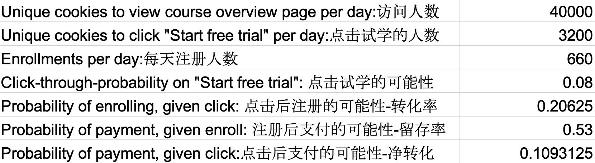

本项目为我在优达学城数据分析纳米学位的毕业项目，目的是设计一个合理的ab测试。在本项目中，我所要考虑的是由优达学城运行过的一个真实试验。具体数字已做更改，但是模式并没有改变。我需要将试验的想法变成一个完整定义的设计、分析其结果，并提供一个高层次的后续实验。
在进行此试验时，优达学城当前的主页上有两个选项：“开始免费试学”和“访问课程资料”。如果学生点击“开始免费试学”，系统将要求他们输入信用卡信息，然后他们将进入付费课程版本的免费试学。14天后，将对他们自动收费，除非他们在此期限结束前取消试用。若学生点击“访问课程材料”，他们将能够观看视频和免费进行小测试，但是他们不会获得导师指导支持或验证证书，无法提交最终项目来获取反馈。
在此试验中，优达学城测试了一项变化，如果学生点击“开始免费试学”，系统会问他们有多少时间投入到这个课程中。如果学生表示每周5小时或更多，将按常规程序进行登录。如果他们表示一周不到5小时，将出现一条消息说明优达学城的课程通常需要更多的时间投入才能成功完成，并建议学生可免费访问课程资料。在这里，学生可选择继续进行免费试学，或免费访问课程资料。这张截图展示了试验概况。

Experiment Design

对于选择作为评估度量的每个度量，假设有5000个 cookie 样本大小访问课程概述页面的情况下，估计了一下其标准偏差。
总转化率是以cookie数量作为分母，也是转移的单位。转移单位等于分析单位，表明分析估计值与经验变异类似
留存率是以“登录用户数”为分母，与转移单位cookie不相似，分析单位和转移单位不相似，所以分析估计值与经验变异不相似
净转化率是以cookie数量作为分母，也是转移的单位。转移单位等于分析单位，标明分析估计值与经验变异类似
在分析阶段不准备使用使用 Bonferroni 校正，因为本实验中总转化率和净转化率是相关联的，使用 Bonferroni 校正会使试验结果过于保守。使用的统计显著性水平为 0.05，统计功效设置为 0.80。使用在线计算器计算样本容量
最后比较三种评价度量需要的样本容量，净转化率需要的页面浏览量685325；
从实验周期上来说，每天页面总流量是4万，需要的总流量是68.5万，分别计算需要的时间，50%流量需要35天，100%流量需要18天；综合考虑风险容忍度和试验周期，我选择了曝光80%的流量，持续时间22天的方案；
Experiment Analysis
对于每个不变指标，对你在95%置信区间下期望观察到的值、实际观察的值及指标是否通过合理性检查给出结论。对于任何未通过的合理性检查，根据每日数据解释你觉得最有可能的原因。在所有合理性检查通过前，不要开始其他分析工作。
对于每个评估指标，对试验和对照组之间的差异给出 95% 置信区间。说明每个指标是否具有统计和实际显著性。
置信区间= [ -0.0291, -0.0120 ]
置信区间不包括0，具有统计显著性；
置信区间不包含d_min，具有实际显著性
置信区间= [ -0.01160, 0.001857 ]
置信区间包括0，不具有统计显著性；
置信区间包含d_min（+/- 0.0075），不具有实际显著性；
对于每个评估指标，使用每日数据进行符号检验，然后报告符号检验的 p 值以及结果是否具有统计显著性
双尾P值0.0026 小于 alpha 水平0.025，具有统计显著性；
双尾P值0.6776 大于 alpha 水平0.025，不具有统计显著性；
不建议启动试验：总转化率具有统计和实际显著性，通过了预期的假设检验，说明这个措施会减少因为没有足够的时间而离开免费试学的学生数量。净转化率的置信区间包含负数，也就是说有很大的概率净转化率会减少，造成商业上的影响。
Follow-Up Experiment
目前官网上的课程都是英文的，语速特别快，学员一半时间都用在英文课程的理解上，我准备后续改进一下英文视频的翻译版本，或者直接在登陆后课程一开始提醒这个课程需要一定的英语水平。
留存率下降，但是最后的节课率上升